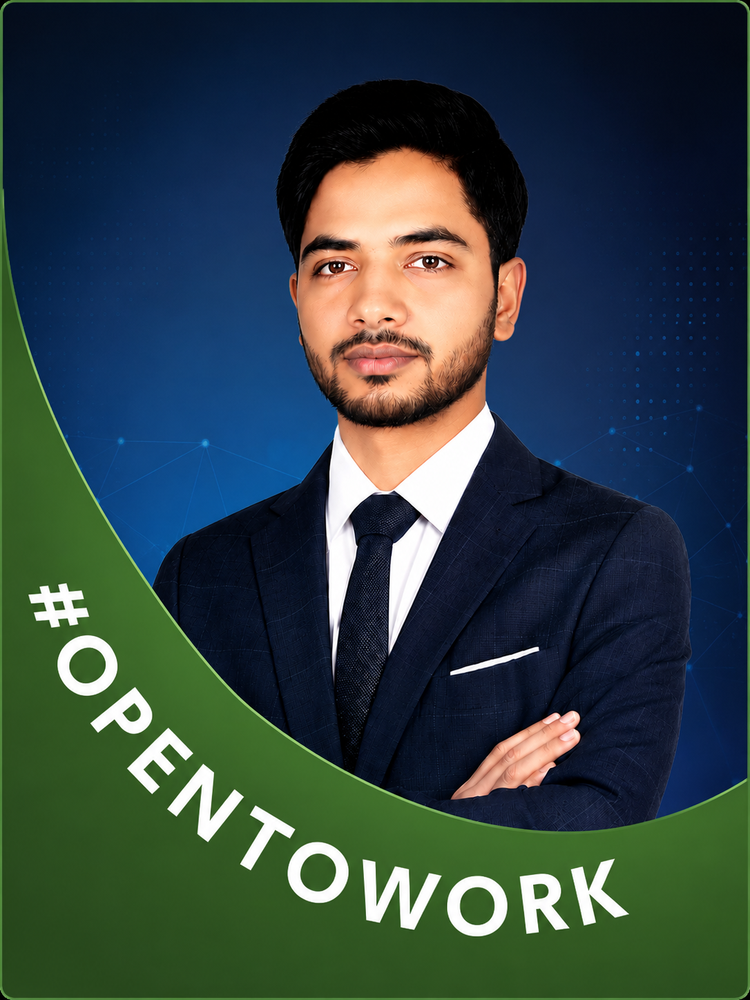

I'm Towhid Ahmed — a Generative AI Engineer who independently designs and ships production-grade LLM applications, multi-agent pipelines, and advanced RAG systems from Bangladesh to the world.

About Me
Agentic Systems | LLMOps | Advanced RAG
I'm Towhid Ahmed, an AI Engineer with 1+ year of freelance experience building LLM applications for clients. I architect multi-agent systems with LangChain and LangGraph, design retrieval-augmented generation (RAG) pipelines with vector databases and cross-encoder re-ranking, and build LLMOps infrastructure for observability and reliability. 7+ projects deployed to production and 400+ DSA problems solved. I'm drawn to work that combines technical depth with real-world impact—building scalable AI products that solve tangible problems.
LangGraph-powered agentic pipelines with conditional routing, retry loops, and HITL checkpoints.
Multimodal, Agentic, Corrective & Graph RAG with cross-encoder re-ranking and hybrid retrieval.
LangSmith observability, Docker, CI/CD, async FastAPI backends, and production guardrails.
400+ LeetCode, solid system design, OOP, design patterns, and production-grade code architecture.
Technical Stack
Experience
Generative AI Engineer with 1+ year of freelance experience designing and deploying production-grade LLM applications, multi-agent AI systems, and Retrieval-Augmented Generation (RAG) solutions for diverse client requirements.
Self-Employed · Jun 2025 – Present
Freelance Project · June 2026 – July 2026
Freelance Project · Aug 2025 – Sep 2025
Portfolio
Every project is a real deployed system — not a tutorial. Click any project to explore the full architecture and engineering decisions.
LangGraph · FastAPI · Pinecone · LangSmith · Docker · Render
/chat, /upload, /health, /metrics) supporting async-safe execution for reliable cloud deployment.Pinecone · Groq · LLaMA 3.3 · Faster-Whisper · LangSmith · Docker
LangGraph · Pinecone · LLM Guardrails · JWT · FastAPI · Docker
LangChain · Weaviate · Streamlit · LLM APIs
LangGraph · Neo4j · Pinecone · Groq · Docker · 93 Tests
LangGraph · APScheduler · SQLite · Docker · Groq · 32/32 Tests
LangGraph · Gmail API · ChromaDB · Groq LLaMA 3.3-70B · Streamlit
Writing
Sharing insights on Generative AI, RAG systems, and real-world AI engineering.
Get in Touch
I'm actively looking for Generative AI Engineer positions with innovative teams across the US and EU. Whether you have a project, a role to discuss, or just want to connect — I'd love to hear from you.
FAQ